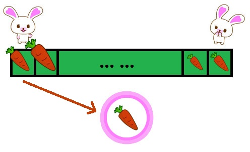
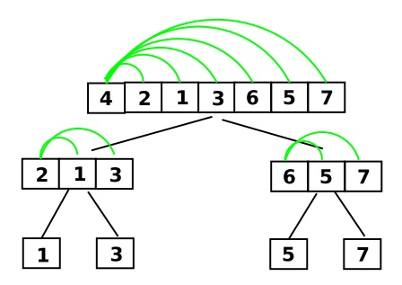
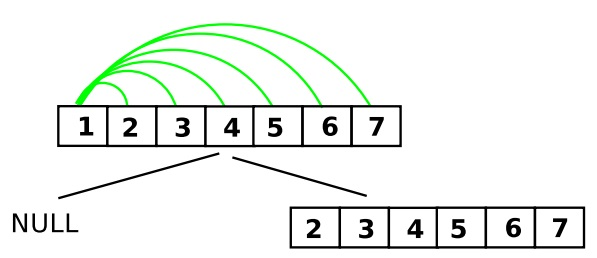
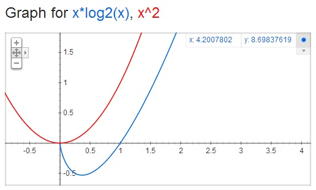
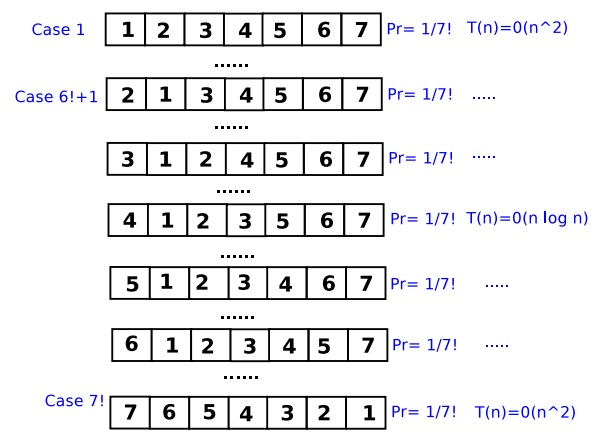

自学算法导论(2-1)
上一节提到，我们希望设计出有艺术性的算法。也描述了一般算法设计的过程，无非是抽象一下问题，设计一个算法，验证一下正不正确，最后再算一下复杂度。其中，抽象应该是很有必要的，要不然很难设计出一个好的算法。验证算法的正确性更是必须要做的，算法是错的还能解决问题吗？！那，复杂度呢，不算复杂度不行吗，好麻烦啊！想想以前写的程序，基本没算过复杂度。
Analysis techniques
所以，问题来了——为什么非要求复杂度？我们为什么要关注复杂度？
《Introduction to algorithms》的解释：
Of course, computers may be fast, but they are not infinitely fast. And memory may be inexpensive, but it is not free. Computing time is therefore a bounded resource, and so is space in memory. You should use these resources wisely, and algorithms that are efficient in terms of time or space will help you do so.
资源是有限的，我们应该合理利用。如何合理利用，这就需要算法了，而且是高效的（efficient）算法！
咦？原书中用的是efficient，为什么不用efficiency？
因为efficient更强调在省时、省力、省钱的情况下达到利益最大化。而我们要设计的算法就是这样的算法，占用的资源少，运行又很快。
但是，efficient和复杂度有什么关系呢？
尽管我们追求efficient这样的算法，但是我们也需要一个评估指标来区分什么是efficient，什么不是efficient。所以，就有了复杂度这一说，即算法复杂度。算法复杂度包括时间复杂度和空间复杂度，我们一般只计算时间复杂度。
开始讲故事：很久很久以前，有一个小伙想比较算法的性能，但是同一个算法在不同计算机的执行时间是不同的。那咋办呢？他想啊想，终于有一天，他发现算法的执行时间是和语句的执行次数成正比的！
好了，剩下的一切也都顺理成章了。他先是搞出了算法的时间复杂度，用来表示算法的时间耗费，专业点说时间复杂度是关于问题规模n的函数。又搞出来一个渐近时间复杂度，描述当问题规模趋向无穷大时，时间复杂度的数量级。
但是，我还有一个疑惑。因为我还见到过这样的符号$\Omega$（大Omega）、$\Theta$（大Theta），这是什么情况，怎么这么多符号？
这里给出了很通俗的解释：
- 大$O$符号表示函数在增长到一定程度时总小于一个特定函数的常数倍。
- 大$\Omega$符号表示函数在增长到一定程度时总大于一个特定函数的常数倍。
- 大$\Theta$符号表示函数的增长不大于大$O$，也不小于大$\Omega$。
注意第三条，刚开始我就一直分不清为什么会有的时候用大$\Theta$，什么时候用大$O$。比如后面要提的主定理，用的是大$\Theta$，但是老师却用的大$O$！当时十分费解啊！现在清楚了吧，亮点在第三条！
其实，没有弄清楚的原因主要在于对这些符号的内涵不够理解。看书静不下心来，实践又没有理论基础。扯远了…回到这几个符号，其实表示的是一个函数集合，而等号并不是其本身的含义，表示一种集合的所属关系，想知道更多吗？你可以看一下这里。
为什么要弄出这么多符号？因为同一个算法在以不同的数据作为输入的时候，性能是不同的，有时候快，有时候慢。即，输入情况的不同，会导致算法的表现不同。
所以，我们想知道算法在最好的情况下执行的效率（不会好于大Omega），在最坏的情况下的执行效率（不会坏于大O），或者知道不好也不坏的区间（即大Theta）。我们通常更关注最坏情况下的效率，因为这是一个底线，而平均情况往往和最坏情况是一样差的。（通常把渐进时间复杂度叫做时间复杂度，也就是大O。）
这就是我们为什么求复杂度，或者说是时间复杂度，再或者是是渐进时间复杂度（大O）的原因。
等会儿，刚才说到“输入情况的不同，会导致算法的表现不同”。也就是说，针对不同的输入，算法的执行语句的不一定相同的，有可能需要大量的循环，也有可能直接break掉结束啦！
所以，时间复杂度的计算是依赖于输入的。
那怎么办啊，输入的情况多了去了，还要一一列举不成？
不要担心，继续讲故事：很久很久以前，有一个小伙和我们有同样的困惑，遇到了同样的问题，但是他解决了这个问题。他努力学习、刻苦钻研、吃了大量的方便面，终于搞出了一系列算法效率分析的方法，如最好情况分析（Best-case analysis）、最坏情况分析（Worst-case analysis）、平均情况分析（Average-case analysis）、平摊分析（Amortized analysis）。
下面来领会一下先人的精神。
- 最好情况分析：给你一个精心构造的输入，让算法的执行时间最短。
- 最坏情况分析：给一个最坏的输入，让算法执行的时间最长。
- 平均情况分析：这个和输入的概率有关，比如尽管输入只有12和21两种可能，但是输入21的概率几乎为0，平均分析的时候12占的权重就要很大。
- 平摊分析：把所有的开销平摊到每一个操作身上，就像和姚明站在一起你的平摊身高就高了。算法也是如此，即便是有几个操作特别的耗时，但是一平摊可能会发现时间花的很少。
下面还是通过例子来看看什么是最好情况分析、最坏情况分析、平均情况分析、平摊分析。不过，我们需要先温习一个排序算法——快速排序（Quick Sort）。个人感觉，快速排序是最难理解的一个排序，不像冒泡、插入等那么直观。所以，有必要先深入理解一下快速排序，再进行算法效率的分析。
我们可以这样去理解：有一排种在地里的胡萝卜，它们大小不一。现在要把它们按从小到大排序，而胡萝卜只能种在原来的土地上，怎么办？
可以这样去做，兔子妈妈带着一窝小兔来做这件事情。她先选择一个参照的胡萝卜大小（假如是第一个胡萝卜），并把这个参照的胡萝卜拔出了自己拿着。
然后，选2个兔宝宝，姐姐站在第一个胡萝卜的位置，妹妹站在最后一个胡萝卜的位置。
对妹妹说“宝贝，你从后往前找，看到比妈妈的胡萝卜小的就扔个姐姐，姐姐把胡萝卜种在她那边，一会儿姐姐就还给你一个大的，你把它种在你那边”。
对姐姐说“丫头，妹妹给你胡萝卜以后你就种下，现在第一个胡萝卜的位置已经有一个坑了”。
最后，妈妈补充道“两个小宝贝，你们依次来找胡萝卜哈，先让妹妹找，再让姐姐找，等到你俩走到同一个位置了就不找了”。
大体的思想可以用下图表达一下，被圆圈圈起来的胡萝卜表示第一个胡萝卜，现在被兔妈妈拿着。

当然，刚才进行的只是第一轮排序，经过第一轮的排序，参照胡萝卜的左边放着相对小一些的胡萝卜，右边放着大一点的胡萝卜。而参照胡萝卜的位置已经是正确的了，剩下的需要用相同的方法，分别对左侧和右侧的胡萝卜进行排序。所以，这是一个递归的过程，python实现代码如下。
import random
def QuickSort(arr, left, right):
if left < right:
pivot = arr[left]
p1 = left
p2 = right
while p1 < p2:
while arr[p2] >= pivot and p1 < p2:
p2 -= 1
arr[p1] = arr[p2]
while arr[p1] < pivot and p1 < p2:
p1 += 1
arr[p2] = arr[p1]
arr[p1] = pivot
QuickSort(arr, left, p1-1)
QuickSort(arr, p1+1, right)
if __name__ == '__main__':
LENGTH = 20
arr = [ random.randint(0,100) for i in range(LENGTH) ]
print arr
QuickSort(arr, 0, LENGTH-1)
print arr
唉，终于看明白了什么是快速排序。下面才是正题，算法效率分析方法：最好情况分析、最坏情况分析、平均情况分析、平摊分析。
最好情况分析

这就是我们精心构造的输入，这样可以保证每一次的参照胡萝卜都在中间，也就是正好划分成相等的两半。这样的时间复杂度是多少呢，到底效果有多好呢？
答案是：$T(n)=O(n)+2T(\frac{n}{2})=O(n\log_{2}n)$，其中$T(n)$是算法的时间复杂度；$O(n)$是执行划分所花的时间，主要包括姐姐和妹妹一次次的比较，一共$n-1$次，互换胡萝卜的时间被省略了，所以使用了渐进时间复杂度；$2T(\frac{n}{2})$表示划分得到的2部分排序需要的时间。
可以看到，这是一个递归表达式。如何通过递归关系得到通式呢？貌似组合数学的母函数可以做到。但是，这里其实并不需要了。因为，有曾经有一个人也和我们碰到了同样的问题，又苦于不想每次都使用母函数来解决，于是搞出了主定理（Master theorem）。听上去很高深，其实就是几个公式：
假设有递推关系式：$T(n)=aT(n/b) + f(n)$，其中，n为问题规模，a为递推的子问题数量，n/b为每个子问题的规模（假设每个子问题的规模基本一样），f(n)为递推以外进行的计算工作。
- 如果$f(n)=O(n^{\log_b a - \epsilon})$，那么就有$T(n)=\Theta(n^{\log_b a })$
- 如果$f(n)=\Theta(n^{\log_b a})$，那么就有$T(n)=\Theta(n^{\log_b a }) \log n $
- 如果$f(n)=\Omega(n^{\log_b a + \epsilon})$并且$a f(n/b) \leq c f(n)$，那么就有$T(n)=\Theta( f(n) )$
而$T(n)=O(n)+2T(\frac{n}{2})$对应于第二种情况，所以可以得到$O(n\log_{2}n)$。
通过公式能够得到答案。但是不想死记硬背这些公式，怎么办？尝试理解公式的具体含义吧！
《算法导论中文版》给出的解释很好理解：
对于三种情况的每一种，我们将函数$f(n)$与$n^{log_b a}$进行比较。直觉上，两个函数较大者决定了递归式的解。
若函数$n^{log_b a}$更大，如情况1，则解为$T(n)=\Theta(n^{\log_b a })$；
若函数$f(n)$更大，如情况3，则解为$T(n)=\Theta( f(n) )$；
若两个函数大小相当，如情况2，则乘上一个对数因子，解为$T(n)=\Theta(n^{\log_b a }) \log n=\Theta(f(n)log n)$。
所以，我们可以无需记那繁琐的公式，根据理解计算就可以啦。当然，主定理的只是一种求解递归关系的方法，只能解决一部分问题，这样的估计就不行了吧：$T(n) \leq T(n/3)+T(2n/3)+cn$。当然，还有一些其他的方法，比如代入法什么的，有时间了可以去这里看看。
突然发现问题越来越多，有木有！总之我们现在已经完成了最好情况的分析，使用主定理顺利的求出了最好情况下的时间复杂度。
最坏情况分析
下面对快速排序进行最快情况分析，首先要精心构造一个最坏的输入，让算法执行的时间越长越好，如下图。

好吧，对于这样的输入，真心无语了，拿个有序的输入来排序。每次参照的胡萝卜都是当前最小的，所以只是在不停的比较，然后发现比参照的要大，无需移动。重点是这样划分的结果是没有划分，仍然只是对一边进行排序。
我们来求一下时间复杂度$T(n)=O(n)+T(n-1)=O(n^2)$。这个没法用主定理了，先求$T(n-1),T(n-2),…,T(2)$，然后等式两边相加可以求得。
平均情况分析
通过前面的最好、最坏情况分析，我们得到了两个时间复杂度，一个是$O(nlogn)$，一个是$O(n^2)$。通过下图，可以明显看出这性能差距还是很大的。

我们不能因为某个算法的最坏情况很糟糕，就吧它归入不好的算法吧。也不能因为其最好的情况特别好，就把它归入优秀算法。我们需要更加合理的评估它们。通过最好、最坏情况分析，可以发现算法的表现很大程度上归咎于输入的数据。
那…我们就把所有的输入都测一遍，不同的输入赋予不同的权重，权重和这种输入出现的概率有关。这样做，就不用担心某些算法会构造好输入来伪装成好的算法，也不用担心埋没了一些偶尔表现不佳的好算法了。
是的，我们可以列举出所有可能的输入，这个难度应该不大。但是，我们很难知道这种输入的概率，这一点就不如人家平摊分析。唉，算了，既然不知道概率分布，就假设成随机分布吧，即每一种输入出现的概率都一样+_+
如何分析呢？我们可以把所有情况列举出来，概率已经假设成一样的了，即1/7!。然后针对每一种情况求时间复杂度。最后把所有的时间复杂度相加求平均，也不算多啦，也就计算7!次~如下图。

但是，我们肯定不会采用这种方法。我们一直在追求效率，我们肯定喜欢越快越好。所以，就需要对各种情况进行分析，看看有什么计算的小技巧没~
经过努力的观察分析，我们发现：时间复杂度主要是由划分造成的，即把小于参照胡萝卜的数放到左边，大于它的数放到右边，主要考虑其中比较的时间，也就是比较的次数。（难道还有两个元素不进行比较的情况？当然有了，划分在两侧的元素，就没有比较的可能了。所以，要想比较，就必须在某次的划分中分到一起，并且其中一个元素为主元，也就是参照胡萝卜。）
而这里，我们是通过计算两个数比较的概率来得到最终的平均情况下的时间复杂度。如果知道了任意两个数比较的概率，将其求和就是最终的期望，也就是时间复杂度。
设要比较的两个元素为$z_i$、$z_j$。它们要想比较，必须某次划分的时候在同一个区间，且其中一个为主元。
所以，这两个元素进行比较的概率为：$Pr\lbrace z_i,z_j \rbrace=Pr\lbrace z_i\ or\ z_j\ is\ the\ pivot\rbrace=Pr\lbrace z_i\ is\ the\ pivot\rbrace + Pr\lbrace z_j\ is\ the\ pivot\rbrace = \frac{1}{j-i+1}+\frac{1}{j-i+1}=\frac{2}{j-i+1}$
费这么大劲，终于可以得到最终的答案了：$E(Comparison)=\sum_{i=1}^{n-1}\sum_{j=i+1}^{n}\frac{2}{j-i+1} \approx 1.39nlog_2 n = O(nlog_2 n)$
平摊分析见下一小节~
-- EOF --